src.classes¶
Container of the used classes of the module.
Module Contents¶
Classes¶
Piecewise linear continuous curves in the domain Ω. |
|
Elements of a weighted product space of curve type objects. |
|
Sparse dynamic measures composed of a finite weighted sum of Atoms. |
|
Dual variable class. |
-
class
src.classes.curve(*args)¶ Piecewise linear continuous curves in the domain Ω.
To There are two ways to initialize a curve. Either input a single numpy.ndarray of size (M,2), representing a set of M spatial points, the produced curve will take M uniformly taken time samples.
Alternative, initialize with two arguments, the first one a one dimentional ordered list of time samples of size M, and a numpy.ndarray vector of size (M,2) corresponding to the respective spatial points.
- Attributes
- spatial_pointsnumpy.ndarray
(M,2) sized array with
Mthe number of time samples. Corresponds to the position of the curve at each time sample.- time_samplesnumpy.ndarray
(M,) sized array corresponding to each time sample.
-
__add__(self, curve2)¶
-
__sub__(self, curve2)¶
-
__mul__(self, factor)¶
-
__rmul__(self, factor)¶
-
draw(self, tf=1, ax=None, color=[0.0, 0.5, 1.0], plot=True)¶ Method to draw the curve.
Using matplotlib.collections.LineCollection, this method draws the curve as a collection of segments, whose transparency indicates the time of the drawn curve. It also returns the segments and their respective colors.
- Parameters
- tffloat, optional
value in (0,1] indicating until which time the curve will be drawn. Default 1.
- axmatplotlib.axes.Axes, optional
An axes object to which to include the drawing of the curve. Default None
- colorlist[float], optional
Length-3 list of the RGB color to give to the curve. Default [0.0, 0.5, 1.0]
- plotbool, optional
Switch to draw or not the curve.
- Returns
- axmatplotlib.axes.Axes
The axes with the drawn curve
- segments_colors(numpy.ndarray, numpy.ndarray)
A tuple with the segments describing the curve on the first entry, and the RGBA colors of them in the second entry
-
eval(self, t)¶ Evaluate the curve at a certain time.
- Parameters
- tlist[float] or float
time values in
[0,1].
- Returns
- positionsnumpy.ndarray
(N,2) sized array representing
Ndifferent points inR^2.Ncorresponds to the number of input times.
-
eval_discrete(self, t)¶ Evaluate the curve at a certain time node.
- Parameters
- tint
The selected time sample, in 0,1,…,T, with T the number of time samples of the considered problem.
- Returns
- numpy.ndarray
A single spatial point represented by a (1,2) array.
-
integrate_against(self, w_t)¶ Method to integrate a dual variable along this curve.
- Parameters
- w_t
src.classes.dual_variable The dual variable to integrate against
- w_t
- Returns
- float
The integral of w_t along the curve.
-
H1_seminorm(self)¶ Computes the
H^1seminorm of the curve- Returns
- float
-
L2_norm(self)¶ Computes the
L^2norm of the curve- Returns
- float
-
H1_norm(self)¶ Computes the
H^1norm of this curve.- Returns
- float
-
energy(self)¶ Computes the Benamou-Brenier with Total variation energy.
It considers the regularization parameters α and β that should have been already input to the solver.
- Returns
- float
Notes
This value is obtained via
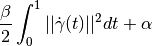
with
 the curve instance executing this method,
and 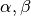 the constants defining the inverse problem
(input via
the curve instance executing this method,
and 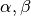 the constants defining the inverse problem
(input via src.DGCG,set_model_parameters()and stored insrc.config.alpha,src.config.beta.
-
set_times(self, new_times)¶ Method to change the
time_samplesmember,It changes the vector of time samples by adjusting accordingly the
spatial_pointsmember,- Parameters
- new_timesnumpy.ndarray
1 dimensional array with new times to have the curve defined in.
- Returns
- None
-
class
src.classes.curve_product(curve_list=None, weights=None)¶ Elements of a weighted product space of curve type objects.
It can be initialized with empty arguments, or via the keyworded arguments curve_list and weights.
- Attributes
- weightslist[float]
Positive weights associated to each space.
- curveslist[
src.classes.curve] List of curves
-
__add__(self, curve_list2)¶
-
__sub__(self, curve_list2)¶
-
__mul__(self, factor)¶
-
__rmul__(self, factor)¶
-
H1_norm(self)¶ Computes the considered weighted product
 norm.
norm.- Returns
- float
Notes
If we have a product of
 curve spaces with weights
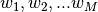, then an element of this space is
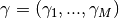 and has a norm
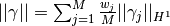
curve spaces with weights
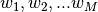, then an element of this space is
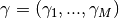 and has a norm
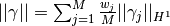
-
to_measure(self)¶ Cast this objet into
src.classes.measure
-
class
src.classes.measure¶ Sparse dynamic measures composed of a finite weighted sum of Atoms.
Initializes with empty arguments to create the zero measure. Internally, a measure will be represented by curves and weights.
Notes
As described in the theory/paper, an atom is a tuple
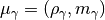
Where the first element is defined as the measure

That is in a Dirac delta transported along a curve and normalized by 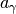, its Benamou-Brenier energy.
The second member of the pair 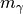 is the momentum and it is irrelevant for numerical computations so we will not describe it.
- Attributes
- curveslist[
src.classes.curve] List of member curves.
- weightsnumpy.ndarray
Array of positive weights associated to each curve.
- curveslist[
-
add(self, new_curve, new_weight)¶ Include a new curve with associated weight into the measure.
- Parameters
- new_curve
src.classes.curve Curve to be added.
- new_weightfloat
Positive weight to be added.
- new_curve
- Returns
- None
-
__add__(self, measure2)¶
-
__mul__(self, factor)¶
-
__rmul__(self, factor)¶
-
modify_weight(self, curve_index, new_weight)¶ Modifies the weight of a particular Atom/curve
- Parameters
- curve_indexint
Index of the target curve stored in the measure.
- new_weightfloat
Positive new weight.
- Returns
- None
-
integrate_against(self, w_t)¶ Integrates the measure against a dual variable.
- Parameters
- Returns
- float
-
spatial_integrate(self, t, target)¶ Spatially integrates the measure against a function for fixed time.
- Parameters
- tint
Index of time sample in 0,1,…,T. Where (T+1) is the total number of time samples of the inverse problem.
- targetcallable[numpy.ndarray, float]
A function that takes values on the 2-dimensional domain and returns a real number.
- Returns
- float
-
to_curve_product(self)¶ Casts the measure into a
src.classes.curve_product.- Returns
- None
-
get_main_energy(self)¶ Computes the Tikhonov energy of the Measure.
This energy is the main one the solver seeks to minimize.
- Returns
- float
Notes
The Tikhonov energy for a dynamic sparse measure
 is
obtained via
is
obtained via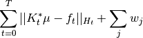
Where 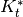 is the input forward operator
src.operators.K_t_star(), is the input
data to the problem, and
is the input
data to the problem, and  are the weights of the
atoms in the sparse dynamic measure.
are the weights of the
atoms in the sparse dynamic measure.
-
draw(self, ax=None)¶ Draws the measure.
- Parameters
- axmatplotlib.axes.Axes, optional
axes to include the drawing. Defaults to None.
- Returns
- matplotlib.axes.Axes
The modified, or new, axis with the drawing.
-
animate(self, filename=None, show=True, block=False)¶ Method to create an animation representing the measure object.
Uses
matplotlib.animation.FuncAnimationto create a video representing the measure object, where each curve, and its respective intensity is represented. The curves are ploted on time, and the color of the curve represents the respective intensity. It is possible to output the animation to a.mp4file ifffmpegis available.- Parameters
- filenamestr, optional
A string to save the animation as
.mp4file. Default None (no video is saved).- showbool, optional
Switch to indicate if the animation should be immediately shown. Default True.
- framesint, optional
Number of frames considered in the animation. Default 51.
- Returns
- None
-
reorder(self)¶ Reorders the curves and weights of the measure.
Reorders the elements such that they have increasing intensity. The intensity is defined as
intensity = weight/energy- Returns
- None
-
class
src.classes.dual_variable(rho_t)¶ Dual variable class.
The dual variable is obtained from both the current iterate and the problem’s input data. The data can be fetched from
config.f_t.To initialize, call dual_variable(current_measure) with
current_measureasrc.classes.measure.-
eval(self, t, x)¶ Evaluate the dual variable in a time and space
- Parameters
- tint
Time sample index, takes values in 0,1,…,T. With (T+1) the total number of time samples of the inverse problem.
- xnumpy.ndarray
- (N,2) sized array representing ``N`` spatial points of the domain Ω.
- Returns
- numpy.ndarray
(N,1) sized array, corresponding to the evaluations in the N given points at a fixed time.
-
grad_eval(self, t, x)¶ Evaluate the gradient of the dual variable in a time and space
- Parameters
- tint
Time sample index, takes values in 0,1,…,T. With (T+1) the total number of time samples of the inverse problem.
- xnumpy.ndarray
- (N,2) sized array representing ``N`` spatial points of the domain Ω.
- Returns
- numpy.ndarray
(2,N,1) sized array, corresponding to the evaluations in the N given points at a fixed time, and the first coordinate indicating the partial derivatives.
-
animate(self, measure=None, resolution=0.01, filename=None, show=True, block=False)¶ Animate the dual variable.
This function uses matplotlib.animation.FuncAnimation to create an animation representing the dual variable. Since the dual variable is a continuous function in Ω, it can be represented by evaluating it in some grid and plotting this in time. This method also supports a measure class input, to be overlayed on top of this animation. This option is helpful if one wants to see the current iterate
 overlayed on its dual variable,
the solution curve of the insertion step or, at the first iteration,
the backprojection of the data with the ground truth overlayed.
overlayed on its dual variable,
the solution curve of the insertion step or, at the first iteration,
the backprojection of the data with the ground truth overlayed.- Parameters
- measure
src.classes.measure, optional Measure to be overlayed into the animation. Defaults to None.
- resolutionfloat, optional
Resolution of the grid in which the dual variable would be evaluated. Defaults to 0.01.
- filenamestr, optional
If given, will save the output to a file <filename>.mp4. Defaults to None.
- showbool, default True
Switch to indicate if the animation should be shown.
- blockbool, default False
Switch to indicate if the animation should pause the execution. Defaults to False.
- measure
- Returns
- matplotlib.animation.FuncAnimation
Notes
The method returns a FuncAnimation object because it is required by matplotlib, else the garbage collector will eat it up and no animation would display. Reference: https://stackoverflow.com/questions/48188615/funcanimation-doesnt-show-outside-of-function
-
grid_evaluate(self, t, resolution=0.01)¶ Evaluates the dual variable in a spatial grid for a fixed time.
The grid is uniform in [0,1]x[0,1]
- Parameters
- tint
Index of time sample, takes values in 0,1,…,T. Where (T+1) is the total number of time samples of the inverse problem.
- resolutionfloat, optional
Resolution of the spatial grid. Defaults to 0.01
- Returns
- evaluationsnumpy.ndarray
Square float array of evaluations.
- maximum_at_tfloat
Maximum value of the dual variable in this grid at time t.
-
get_sum_maxs(self)¶ Output the sum of the maxima of the dual variable at each time.
This quantity is useful to discard random curves that have too high initial-speed/Benamou-Brenier energy.
- Returns
- float
-
_density_transformation(self, x)¶ The function that is applied to use the dual variable as density.
-
as_density_get_params(self, t)¶ Return the parameters to use the dual variable as density.
This method is useful for the rejection sampling algorithm. See
src.insertion_mod.rejection_sampling().- Parameters
- tint
Index of the time samples, with values in 0,1,…,T. Where (T+1) is the total number of time samples of the inverse problem.
- Returns
- density_supportfloat
Proportion of the sampled pixels where the density is non-zero at the given time t.
- density_maxfloat
Maximum value of the density at the given time t.
-
as_density_eval(self, t, x)¶ Evaluate the density obtained from the dual variable.
- Parameters
- tint
Index of the time samples, with vales in 0,1,…,T. With (T+1) the total number of time samples of the inverse problem.
- xnumpy.ndarray
(1,2) array of floats representing a point in the domain Ω.
- Returns
- float
-